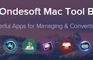

Stacksocial just published its so called Free Ondesoft Mac Tool Bundle, which contains 5 apps from Onesoft. The bundle is worth $146 will be probably available only a couple of days so you’d better hurry up to get it.

Here comes the next bundle for march. This time its macware who publish a bundle. The so called macware Business Bundle contains 6 apps at a price of only 29.99 instead of 199.94. So you can save around 84%.
The Pro Apps Bundle is a collection of five industry-leading apps from Apple that deliver powerful creative tools for video editors and musicians priced at $299.99. The bundle includes the following software, all optimised for macOS and the latest Mac hardware: Final Cut Pro, Logic Pro, Motion, Compressor, and MainStage.
It’s possible to run your life like a pro, keep your stuff secure, find balance, and achieve peace of mind. Take control with Microsoft 365 and create more time for the things that matter most. Write like a pro with editing and writing suggestions in Word. Become a data analyst with nsights in Excel. And unleash your inner designer with layout and color options in PowerPoint. ind some “me time” in your day by managing multiple calendars with one view in Outlook. Breathe easy knowing you can back up and access photos and files across your devices with 1 TB of OneDrive cloud storage. Included are: Word, Excel, Powerpoint, Outlook, OneDrive, and OneNote.